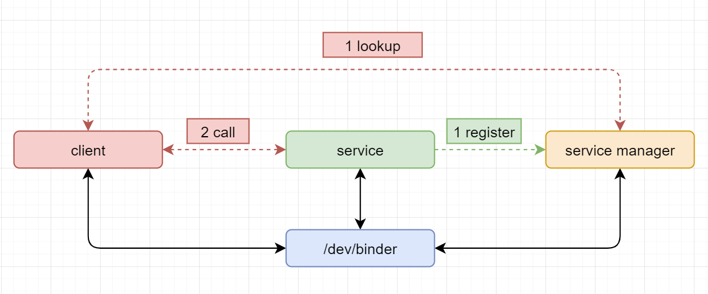

Android Binder通信
在树莓派中理解Android Binder通信
参考文档
https://github.com/hungys/binder-for-linux
内核支持Binder
make menuconfig
.config - Linux/arm 5.4.83 Kernel Configuration → Device Drivers → Android ─────────────────────────────────────────────────── ┌──────────────────────────────── Android ────────────────────────────────┐ │ Arrow keys navigate the menu. <Enter> selects submenus ---> (or empty │ │ submenus ----). Highlighted letters are hotkeys. Pressing <Y> │ │ includes, <N> excludes, <M> modularizes features. Press <Esc><Esc> to │ │ exit, <?> for Help, </> for Search. Legend: [*] built-in [ ] │ │ ┌─────────────────────────────────────────────────────────────────────┐ │ │ │ [*] Android Drivers │ │ │ │ [*] Android Binder IPC Driver │ │ │ │ [ ] Android Binderfs filesystem │ │ │ │ (binder,hwbinder,vndbinder) Android Binder devices │ │ │ │ [ ] Android Binder IPC Driver Selftest │ │ │ │ │ │ │ │ │ │ │ │ │ │ │ │ │ │ │ └─────────────────────────────────────────────────────────────────────┘ │ ├─────────────────────────────────────────────────────────────────────────┤ │ <Select> < Exit > < Help > < Save > < Load > │ └─────────────────────────────────────────────────────────────────────────┘
[Device Drivers] -> [Android]
KERNEL=kernel7l
make -j4 zImage
scripts/kconfig/conf --syncconfig Kconfig CALL scripts/atomic/check-atomics.sh CALL scripts/checksyscalls.sh CHK include/generated/compile.h CC drivers/android/binder.o CC drivers/android/binder_alloc.o AR drivers/android/built-in.a AR drivers/staging/android/ion/built-in.a AR drivers/staging/android/built-in.a AR drivers/staging/built-in.a AR drivers/built-in.a GEN .version CHK include/generated/compile.h UPD include/generated/compile.h CC init/version.o AR init/built-in.a LD vmlinux.o MODPOST vmlinux.o MODINFO modules.builtin.modinfo LD .tmp_vmlinux.kallsyms1 KSYM .tmp_vmlinux.kallsyms1.o LD .tmp_vmlinux.kallsyms2 KSYM .tmp_vmlinux.kallsyms2.o LD vmlinux SORTEX vmlinux SYSMAP System.map OBJCOPY arch/arm/boot/Image Kernel: arch/arm/boot/Image is ready GZIP arch/arm/boot/compressed/piggy_data AS arch/arm/boot/compressed/piggy.o LD arch/arm/boot/compressed/vmlinux OBJCOPY arch/arm/boot/zImage Kernel: arch/arm/boot/zImage is ready
sudo cp arch/arm/boot/zImage /boot/$KERNEL.img
sudo sync
sudo reboot
ls -al /dev/*binder
crw------- 1 root root 10, 61 Mar 5 13:02 /dev/binder crw------- 1 root root 10, 60 Mar 5 13:02 /dev/hwbinder crw------- 1 root root 10, 59 Mar 5 13:02 /dev/vndbinder
-
make
sudo ./servicemanager
bctest
sudo ./bctest publish zengjf
sudo ./bctest lookup zengjf
函数调用：
sudo ./service
sudo ./bctest lookup calculate
sudo ./client a 110

Android中bctest补丁
新的Android版本的bctest没有更新，需要加一些代码才能正常使用
diff --git a/frameworks/native/cmds/servicemanager/bctest.c b/frameworks/native/cmds/servicemanager/bctest.c
index 354df670e54..782bf29e958 100644
--- a/frameworks/native/cmds/servicemanager/bctest.c
+++ b/frameworks/native/cmds/servicemanager/bctest.c
@@ -16,6 +16,7 @@ uint32_t svcmgr_lookup(struct binder_state *bs, uint32_t target, const char *nam
bio_init(&msg, iodata, sizeof(iodata), 4);
bio_put_uint32(&msg, 0); // strict mode header
+ bio_put_uint32(&msg, 0);
bio_put_string16_x(&msg, SVC_MGR_NAME);
bio_put_string16_x(&msg, name);
@@ -40,6 +41,7 @@ int svcmgr_publish(struct binder_state *bs, uint32_t target, const char *name, v
bio_init(&msg, iodata, sizeof(iodata), 4);
bio_put_uint32(&msg, 0); // strict mode header
+ bio_put_uint32(&msg, 0);
bio_put_string16_x(&msg, SVC_MGR_NAME);
bio_put_string16_x(&msg, name);
bio_put_obj(&msg, ptr);
@@ -93,9 +95,12 @@ int main(int argc, char **argv)
fprintf(stderr,"argument required\n");
return -1;
}
+ fprintf(stderr,"published: [%s]\n", argv[1]);
svcmgr_publish(bs, svcmgr, argv[1], &token);
argc--;
argv++;
+
+ while(1);
} else {
fprintf(stderr,"unknown command %s\n", argv[0]);
return -1;